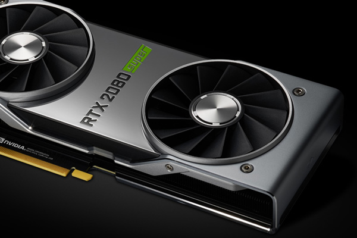

3.1.8 Controladores de Video
Un controlador o driver es el software que controla un dispositivo en un PC; por ejemplo, una tarjeta de vídeo o de sonido. Los controladores actúan como “puentes” entre las aplicaciones y los dispositivos, encargándose de que ambos interactúen.
Si experimenta problemas de corrupción de gráficos o sonido, es muy probable que sus controladores necesiten una actualización. Los fabricantes de hardware actualizan continuamente el software de sus controladores para mejorar el rendimiento de sus productos; las últimas versiones de todos los drivers deben instalarse para garantizar una estabilidad y un rendimiento óptimos.
Cabe señalar que incluso los ordenadores nuevos raramente se distribuyen con los controladores actualizados a las últimas versiones.
La actualización de los controladores es un proceso relativamente sencillo que normalmente implica descargar el software desde el sitio web del fabricante del dispositivo. Si desconoce la marca y el modelo de su tarjeta gráfica / de sonido, su PC le ayudará a identificarla desde el Escritorio de Windows.
